Aging-in-place Design Workshop
UX research and design 中文
Introduction
In this team project, we aimed to hold a co-creation workshop and generated a user research report at the end of the semester. Our team chose “Aging-in-place” as our topic and studied on active seniors in Taiwan. We translated data collected from observations, interviews and cultural probes into a persona and a customer journey map. At the end of the semester, we held a three-hour co-creation workshop with eight participants with a focus on “better elderly lives” and “community center activities innovation.”
Design Process
User research
Design tools
Workshop design
Workshop results
Summary
User research
To collect data, we visited two community centers and made observations as well as interviews with seniors and volunteers. In addition, we conducted cultural probes with 7 seniors to collect data that is hard to collect from interviews. All data collected were analyzed and translated into a persona and a customer journey map.
Design tools
In this project we designed a set of cultural probes, a persona, and a customer journey map.
Cultural probe
To get the context beyond interviews and understand more about seniors’ daily lives and values, we adopted the cultural probe method to collect data. Tools inside the cultural probe set are a diary, postcards, stickers, and pens.
The diary is to understand seniors’ daily schedule, places they go and the fluctuation of their moods. Postcards are used to understand their values and dreams by asking them to answer questions that are on the postcards. Stickers and pens are creative tools seniors can choose to use.

 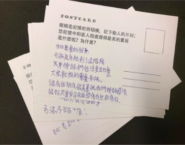
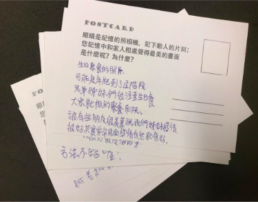
Persona
We came up with the “socially active seniors” type of persona as our main user basing on our collected data. This type of persona tends to share and make friends. They value family life and cherish the time spent with their families. They wish to have fulfilling days in their daytime.
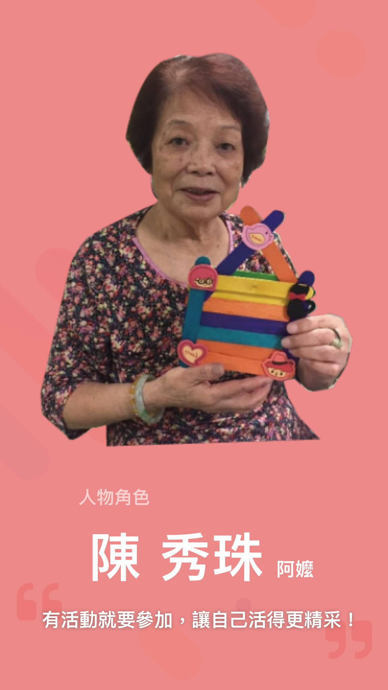 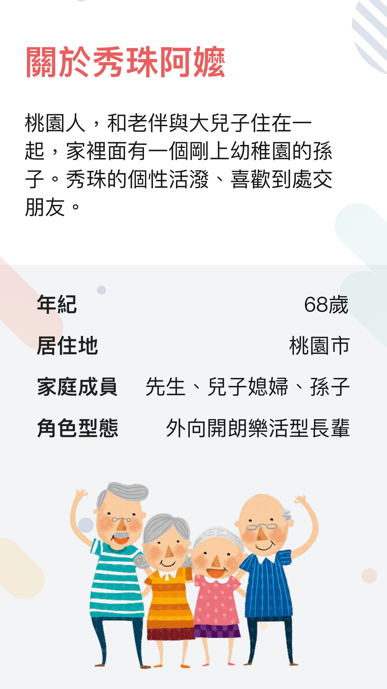 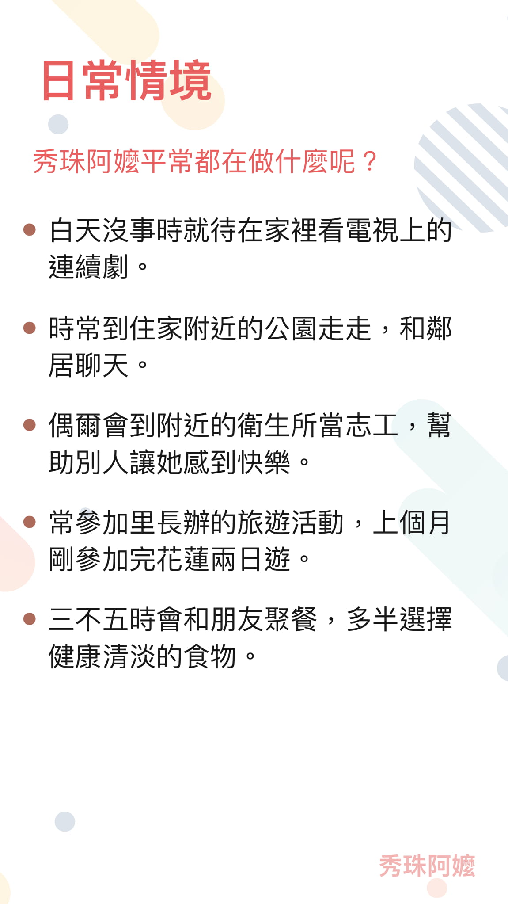 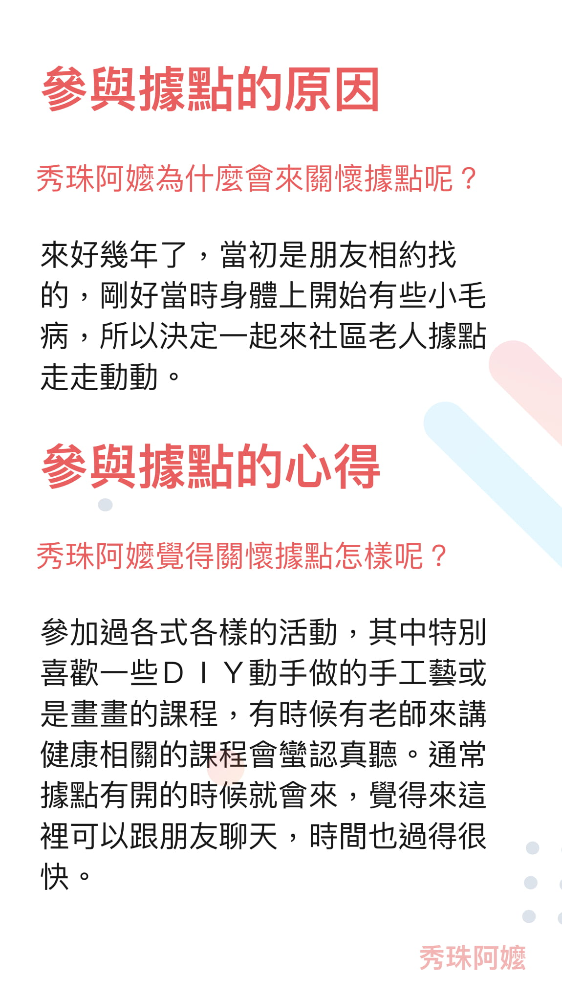 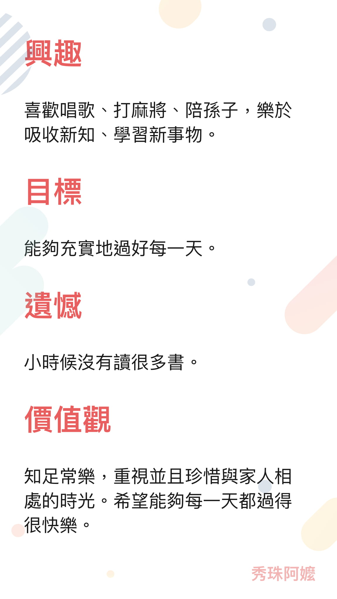 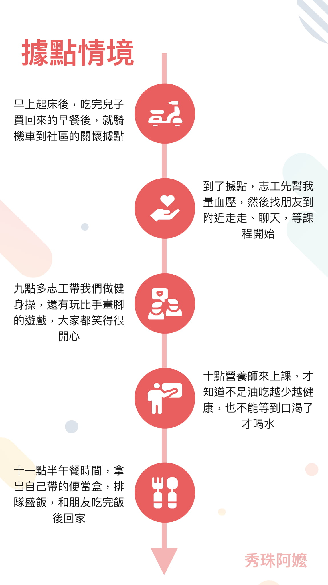Customer journey map
We also came up with a customer journey map that describes a day of the socially active elderly going to a community center. We could see that after seniors leave the community center, they mostly stay home watch television or sleep. Besides, generally they feel happy when they spend their time with people.
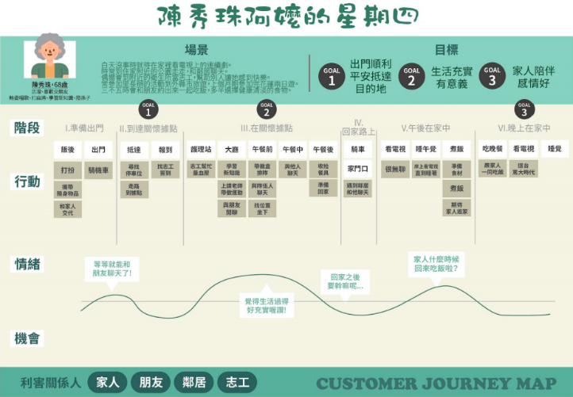Workshop design
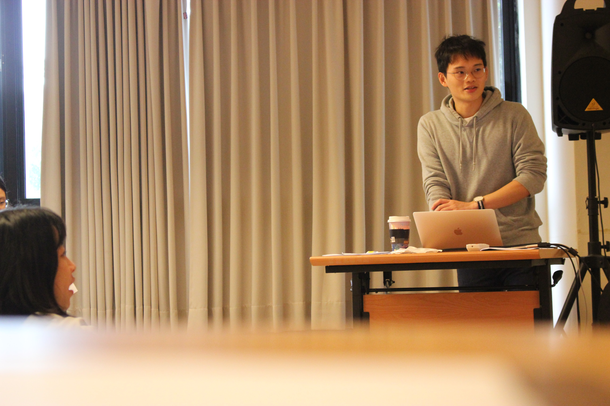For the workshop design, we planned a three-hour workshop and recruited 8 participants (3 male, 5 female). Three of our teammates were coaches and I was the host. We divided the workshop into three sessions: “empathy”, “ideation” and “prototype.”
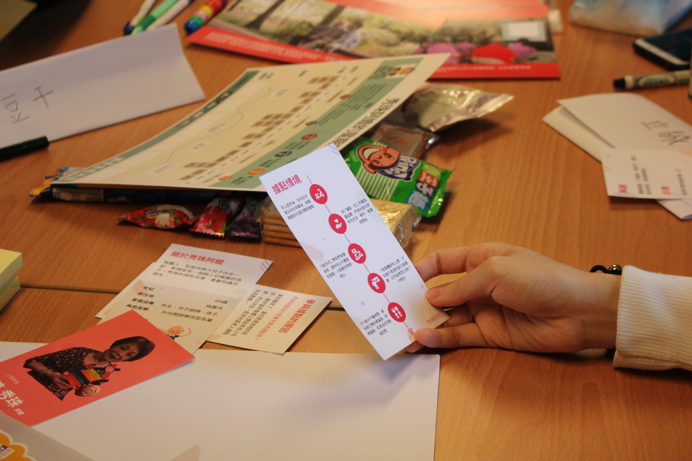In the “empathy” session, we presented research data to participants, including the persona and the customer journey map. We also invited participants to share what kind of pain points and opportunities they interpreted from the data. In the “ideation” session, participants brainstormed. We prepared several case studies to stimulate the ideas of the participants. In the “prototype” session, we gave participants LEGOs and let them build their ideas and share with others.
Workshop results
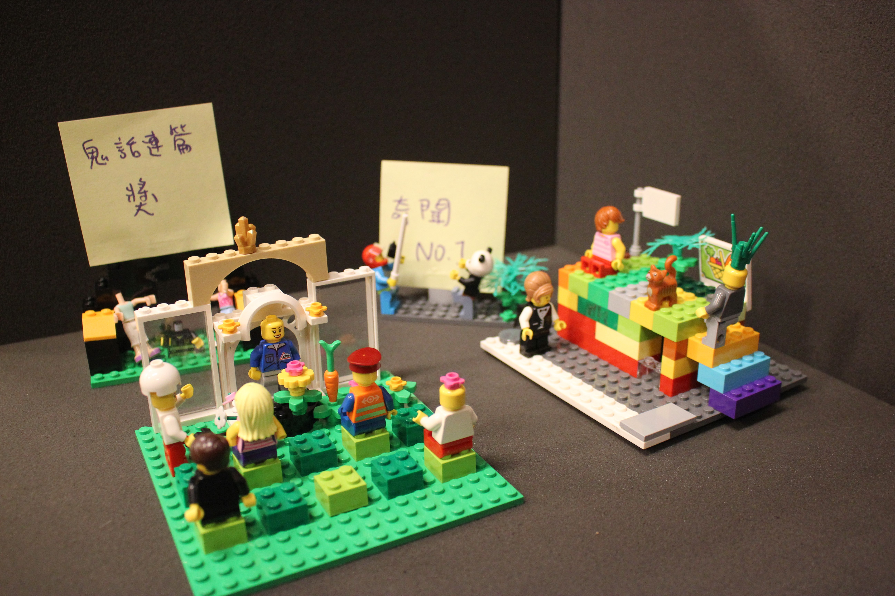 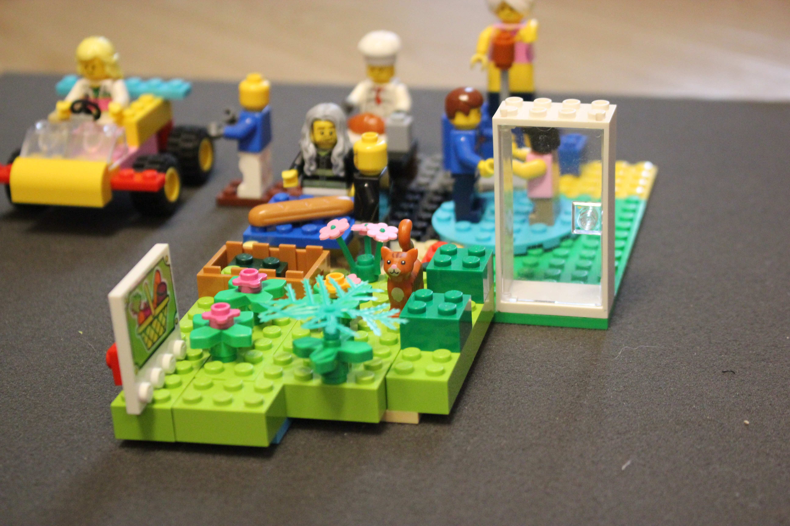In this workshop, we acquired two sets of LEGOs presenting aging-in-place service concepts, insights participants interpreted and feedback sheets. Moreover, our team also extended the outputs from the workshop and came up with two other service concepts. For more details about the workshop, see the slides (in Mandarin) here.
Summary
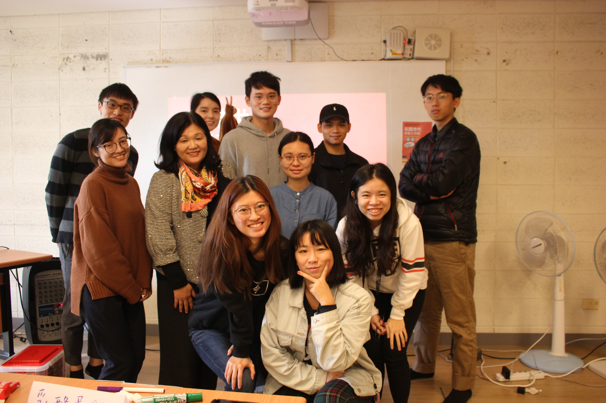In this course, we went through understanding our target users, collecting data and made tools via observation, interviews and cultural probes, recruiting participants and holding a co-creation workshop. For the future workshop design, we learned that we can improve and design a workshop from the different aspects such as participants' background, the presentation of the materials, the guidance of the coach and the creation of the atmosphere.